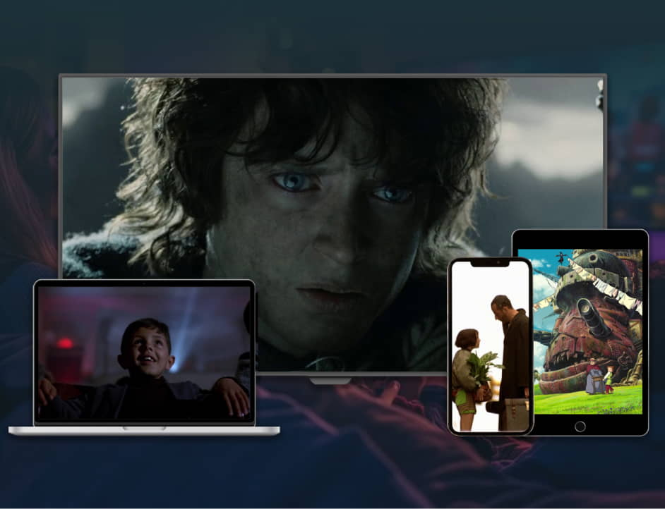

<!--DEV
@ @include('blocks/tv-features/tv-features.html')
-->

<section class="container  tv-features">

  <div class="tv-features__inner  b-lazy" data-src="img/tv-pattern-bg.jpg">

    @@include('../../blocks/section-heading/section-heading.html', {
      "title": "Телебачення",
      "slogan": "Телебачення???",
      "intro": "",
      "addClass": ""
    })

    <div class="row">
      <div class="tv-features__col">
        <div class="tv-features__container">
          <div class="row tv-features__inner-row">

            <div class="tv-features__inner-col-text">
              <div class="tv-features__text">
                <h3 class="h6  tv-features__subtitle">5 пристроїв — одна ціна! Одна підписка на всі пристрої</h3>
                <ul class="list-nostyled  tv-features__list">
                  <li class="tv-features__item">
                    <svg width="32" height="32" aria-hidden="true"><use xmlns:xlink="http://www.w3.org/1999/xlink" xlink:href="img/sprite-svg.svg#parent"></use></svg>
                    <span>Батьківський контроль</span>
                  </li>
                  <li class="tv-features__item">
                    <svg width="32" height="32" aria-hidden="true"><use xmlns:xlink="http://www.w3.org/1999/xlink" xlink:href="img/sprite-svg.svg#box"></use></svg>
                    <span>Архів телепередач</span>
                  </li>
                  <li class="tv-features__item">
                    <svg width="32" height="32" aria-hidden="true"><use xmlns:xlink="http://www.w3.org/1999/xlink" xlink:href="img/sprite-svg.svg#star"></use></svg>
                    <span>Улюблене</span>
                  </li>
                  <li class="tv-features__item">
                    <svg width="32" height="32" aria-hidden="true"><use xmlns:xlink="http://www.w3.org/1999/xlink" xlink:href="img/sprite-svg.svg#list"></use></svg>
                    <span>Програма телеканалу</span>
                  </li>
                  <li class="tv-features__item">
                    <svg width="32" height="32" aria-hidden="true"><use xmlns:xlink="http://www.w3.org/1999/xlink" xlink:href="img/sprite-svg.svg#pause"></use></svg>
                    <span>Пауза ефіру</span>
                  </li>
                  <li class="tv-features__item">
                    <svg width="32" height="32" aria-hidden="true"><use xmlns:xlink="http://www.w3.org/1999/xlink" xlink:href="img/sprite-svg.svg#speed"></use></svg>
                    <span>Перемотка</span>
                  </li>
                </ul>
                <a href="#" class="btn  tv-features__more">
                  <span>Детальніше</span>
                </a>
              </div>
            </div>

            <div class="tv-features__inner-col-img">
              <div class="tv-features__img">
                <picture>
                  <source srcset="img/tv-img.webp" type="image/webp">
                  
                </picture>
              </div>
            </div>

          </div>
        </div>
      </div>
    </div>

  </div>

</section>
